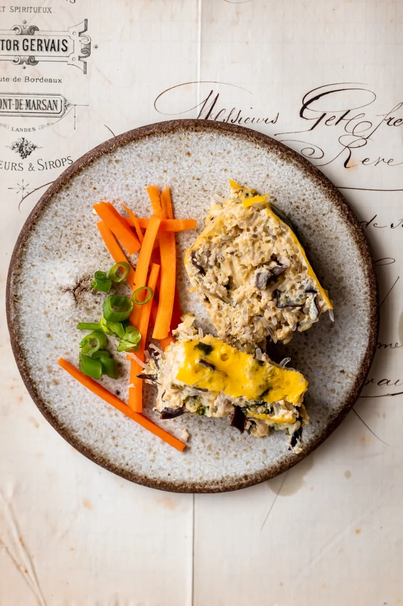

Cha trung hap (Vietnamese Steamed pork egg omelete)

Discription
Cha Trung Hap is a steamed omelete filled with ground pork, green onions, and wood ear mushrooms.
Ingredients
- 300g ground pork
- 20g vermicelli noodles
- 60g wood ear mushrooms
- 2 sping onions
- 15g coriander
- 6 large eggs
- 1 tsp fish scauce
- 1 tsp back pepper
- 1 tsp salt
- 1tsp sugar
- 1/4 tsp sesame oil
- 1/4 cup water
Instructions
- Coat a 8×4 loaf pan with oil. Use any neutral oil you can find.
- Combine all the ingredients into a bowl except for 1 of the eggs.
With the remaining egg, separate the egg yolk from the egg white and add the egg white to the bowl of ingredients.
Whisk together the ingredients and pour into the prepared loaf pan. Set aside the loaf pan and egg yolk.
- Prep your steamer. Bring water to a simmer and add your steamer attachment on top. Put your loaf pan in the steamer.
Make sure you can remove the loaf pan from the steamer after its done cooking.
Sometimes, I like to put an upside down bowl at the bottom of the steamer to create a stand for my loaf pan. This makes it easier to remove.
- Steam for 40 minutes
- poke a few holes in the meatloaf to check if its done. If liquid seeps out of the meatloaf
cook it for a few minutes longer until no liquid comes out.
- Whisk the egg yolk from step 2 and pour it on the meatloaf in an even layer. Steam for another 5 minutes to solidify the egg yolk.
- Remove from the heat and let it sit for 20 minutes before cutting into it.
- Enjoy your meal